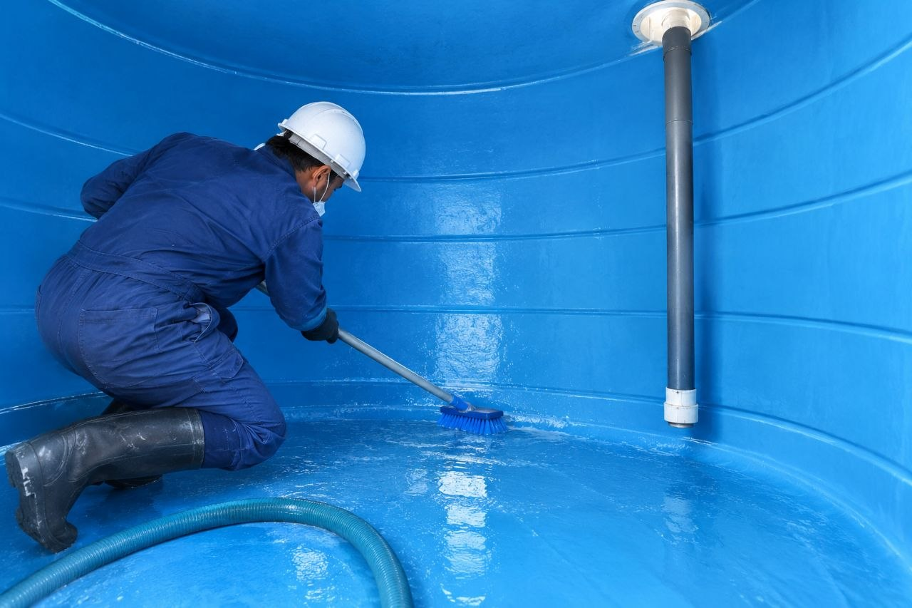
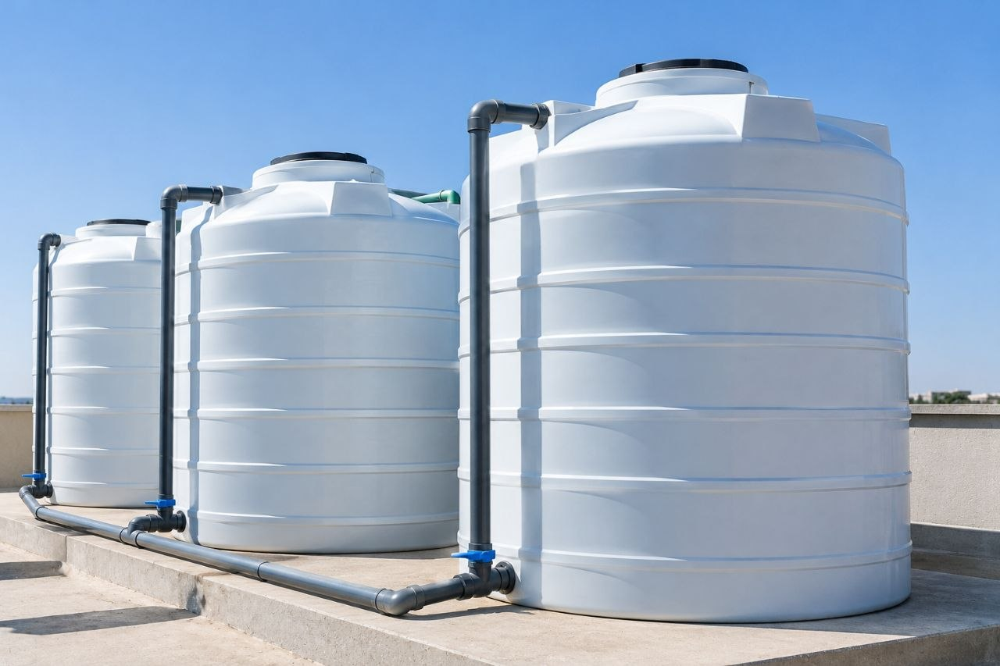
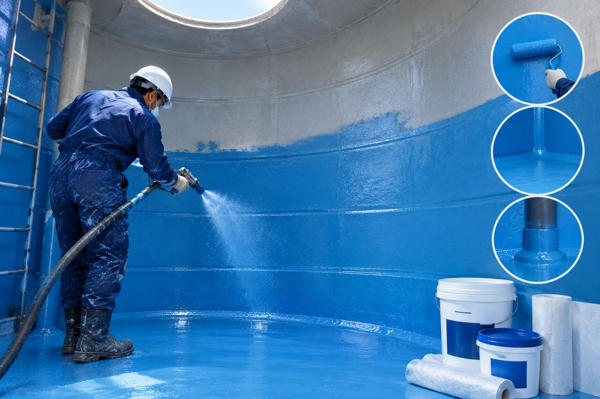
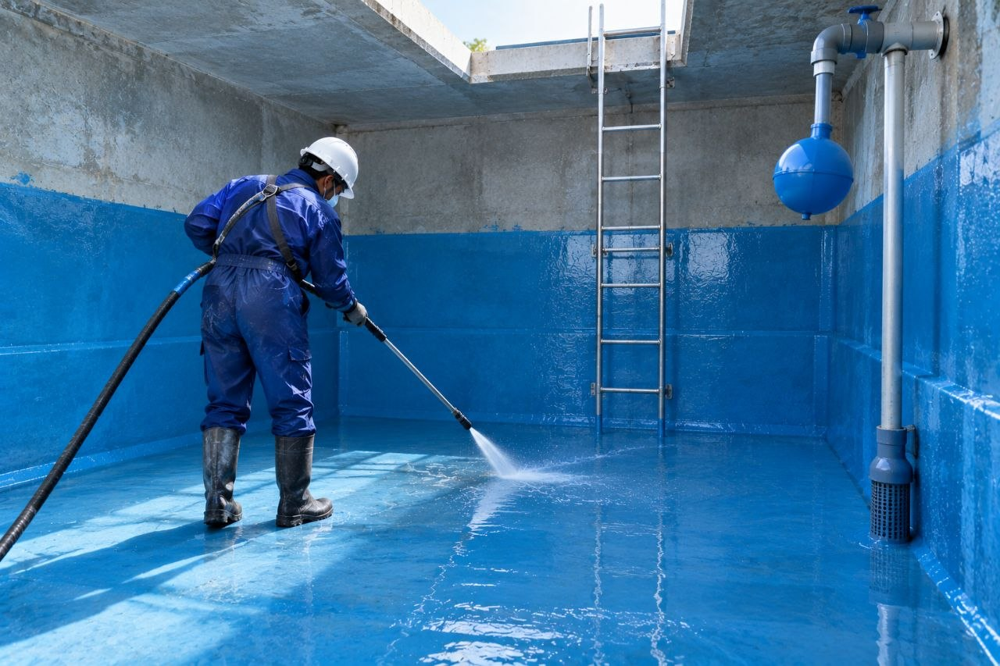
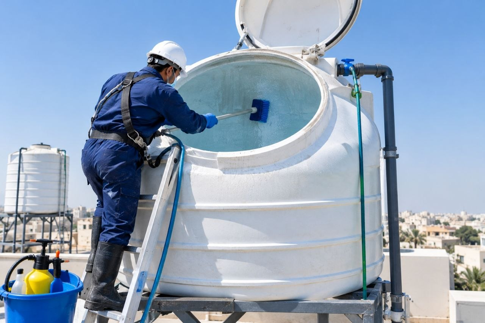
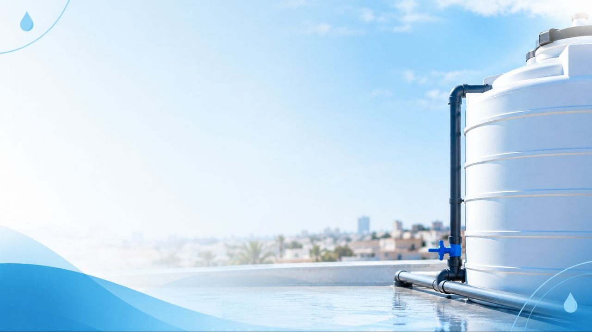

01
تنظيف خزانات المياه
تنظيف الخزانات وإزالة الرواسب والشوائب المتراكمة من الأسطح الداخلية، للمساعدة على المحافظة على نظافة المياه.
اطلب الخدمةحافظ على نقاء مياهك وسلامة عائلتك مع شركة الصفوة المتخصصة في تنظيف وتعقيم خزانات المياه وعزل الخزانات الأرضية والعلوية بالرياض، باستخدام مواد مناسبة ومعدات حديثة واهتمام بأدق التفاصيل لضمان نظافة الخزان والمساعدة في حمايته من التسربات والعوامل الخارجية.


لأن نظافة خزان المياه جزء أساسي من نظافة منزلك، نقدم خدمات متخصصة في تنظيف وعزل خزانات المياه في الرياض، مع الاهتمام بالتفاصيل واختيار الحلول المناسبة لطبيعة كل خزان.
نعمل على إزالة الرواسب والشوائب المتراكمة داخل الخزانات، والاهتمام بتنظيف الأسطح الداخلية، إلى جانب تقديم خدمات عزل خزانات المياه للمساعدة على الحد من التسربات وحماية الخزان وفقًا لحالته ونوعه. ونحرص على تنفيذ كل خدمة بعناية باستخدام الأدوات والمواد المناسبة لطبيعة العمل.
سواء كنت تحتاج إلى تنظيف خزان المياه الأرضي، أو تنظيف الخزانات العلوية، أو معالجة مشكلات العزل والتسربات، تساعدك شركة الصفوة على تحديد الخدمة المناسبة لاحتياجاتك، مع توضيح تفاصيل العمل قبل البدء في التنفيذ.
حلول لتنظيف وعزل الخزانات حسب الاحتياج.
تحديد طريقة العمل حسب نوع الخزان وحالته.
توضيح الخدمة المطلوبة وتفاصيل تنفيذها.
خدمات تنظيف وعزل خزانات المياه بالرياض.
نقدم خدمات متخصصة للعناية بخزانات المياه، بدايةً من التنظيف وإزالة الرواسب، وصولًا إلى العزل ومعالجة مشكلات التسرب، مع اختيار الحل المناسب حسب نوع الخزان وحالته.
تنظيف الخزانات وإزالة الرواسب والشوائب المتراكمة من الأسطح الداخلية، للمساعدة على المحافظة على نظافة المياه.
اطلب الخدمة
02تنفيذ أعمال عزل الخزانات باستخدام المواد المناسبة لنوع الخزان، للمساعدة على الحد من التسربات وحماية الهيكل.
اطلب الخدمة
03العناية بالخزانات الأرضية وإزالة الأوساخ والرواسب، مع مراعاة طبيعة الخزان ومتطلبات التنظيف المناسبة.
اطلب الخدمة
04تنظيف خزانات المياه العلوية في المنازل والمنشآت، مع الاهتمام بإزالة الرواسب والمحافظة على نظافة الخزان.
اطلب الخدمةتواصل مع شركة الصفوة بالرياض للاستفسار عن الخدمة المناسبة لخزانك وتفاصيل التنفيذ.
نهتم بنظافة خزانات المياه وجودة العزل من خلال خطوات عمل مدروسة، واهتمام بالتفاصيل، وحلول تناسب احتياجات منزلك أو منشأتك.
الاهتمام بتفاصيل تنظيف الخزان واختيار طريقة العمل المناسبة حسب نوعه وحالته.
01اختيار مواد العزل المناسبة لطبيعة الخزان للمساعدة على الحد من التسربات وحماية الخزان.
02استخدام الأدوات والمعدات المناسبة للمساعدة على تنفيذ أعمال التنظيف والعزل بعناية.
03توضيح تفاصيل الخدمة والتكلفة المتوقعة قبل البدء في العمل، وفقًا لحالة الخزان ومتطلبات الخدمة.
04تواصل معنا للاستفسار عن خدمات تنظيف وعزل الخزانات في الرياض واختيار الخدمة المناسبة لك.
نحرص على تقديم خدمات تنظيف وعزل خزانات المياه بالرياض من خلال خطوات منظمة تبدأ من التواصل معنا وتنتهي بالتأكد من جودة التنفيذ.
تواصل معنا لتوضيح نوع الخزان والخدمة المطلوبة، وسنساعدك في تحديد الخطوة المناسبة لاحتياجك.
نتعرف على طبيعة الخزان وحالته لتحديد متطلبات التنظيف أو العزل ونطاق العمل المطلوب.
يتم تنفيذ الخدمة المتفق عليها باستخدام الأدوات والمواد المناسبة لطبيعة الخزان ونوع العمل.
نراجع الأعمال المنفذة ونتأكد من إتمام الخدمة المتفق عليها، مع توضيح الإرشادات اللازمة عند الحاجة.
تواصل مع شركة الصفوة للاستفسار عن الخدمة المناسبة لك في الرياض.
جمعنا لك أهم الأسئلة حول خدمات تنظيف خزانات المياه وعزل الخزانات الأرضية والعلوية في الرياض، لتتمكن من معرفة تفاصيل الخدمة واختيار الحل المناسب لاحتياجك.

هل تحتاج إلى تنظيف أو عزل خزان المياه؟ تواصل مع شركة الصفوة في الرياض، وأخبرنا باحتياجك لنساعدك في معرفة تفاصيل الخدمة المناسبة.
يسعدنا استقبال استفساراتك حول تنظيف الخزانات الأرضية والعلوية وخدمات عزل خزانات المياه.
املأ البيانات التالية لبدء التواصل معنا.